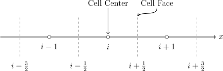

The method used to discretize the one-dimensional Euler equations is the Finite Volume Method. The Finite Volume Method approximates the value at the cell centers by using the flux across the cell faces. Integrating Equation 2.14 over space \begin {equation} \int _V \boldsymbol {U}_t dV + \int _V \boldsymbol {F}_xdV = \boldsymbol {0} \end {equation} and using the Gauss-Divergence Theorem the Volume integral over the flux term can be converted to a surface integral. \begin {equation} \int _V \left (\nabla \boldsymbol {\cdot } \boldsymbol {F}\right ) dV = \int _S \boldsymbol {F} \boldsymbol {\cdot } d\hat {A} \end {equation} Converting the integral of the flux vector, \(\boldsymbol {F}\), into a surface integral gives the following \begin {equation} \int _V \boldsymbol {U}_t\,dV + \int _S \boldsymbol {F} \boldsymbol {\cdot } \boldsymbol {\hat {n}}\,dS = \boldsymbol {0} \end {equation} The surface integral can then be represented as a sum over the surface area of the faces of a cell denoted as seen in Figure 3.1. In one dimension this reduces to \begin {equation} \label {eqn:spatiallydiscretized} \boldsymbol {U}_t \Delta x + \left [\boldsymbol {F}_{i+\frac {1}{2}} - \boldsymbol {F}_{i-\frac {1}{2}}\right ] = \boldsymbol {0} \end {equation} The spatially discretized equation can then be represented as \begin {equation} \label {eqn:spatiallydiscretized2} \boldsymbol {U}_t = - \frac {1}{\Delta x} \left [\boldsymbol {F}_{i+\frac {1}{2}} - \boldsymbol {F}_{i-\frac {1}{2}}\right ] \end {equation} Equation 3.5 can then be solved by finding the value of the numerical flux and an appropriate time discretization.
